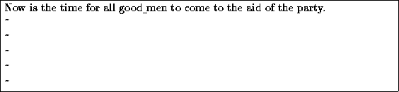
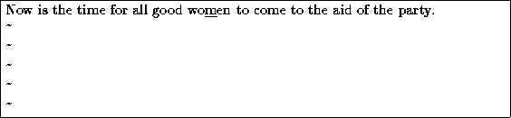
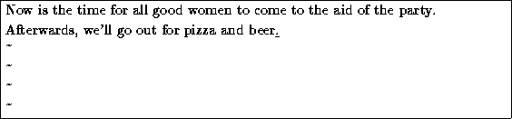

You are now in command mode; in order to insert text into the file, press (which will place you into insert mode), and begin typing.
While inserting text, you may type as many lines as you wish (pressing after each, of course), and you may correct mistakes using the backspace key.
To end insert mode, and return to command mode, press  .
.
While in command mode, you can use the arrow keys to move around the file. Here, because we only have one line of text, trying to use the up- or down-arrow keys will probably cause vi to beep at you.
There are several ways to insert text, other than using the i command. For example, the a command inserts text beginning after the current cursor position, instead of on the current cursor position. For example, use the left arrow key to move the cursor between the words ``good'' and ``men''.

Press , to start insert mode, type ``wo'', and then hit
 to return to command mode.
to return to command mode.

To begin inserting text at the line below the current one, use the o
command. For example, press  and type another line or two:
and type another line or two:

Just remember that at any time you're either in command mode (where
commands such as i, a, or o are valid), or in
insert mode (where you're inserting text, followed by  to
return to command mode), or last line mode (where you're entering
extended commands, as discussed below).
to
return to command mode), or last line mode (where you're entering
extended commands, as discussed below).